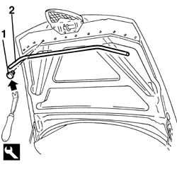

7025A62 bonnet lid anti-wind noise seal - r+r
- Path
- Procedures > 70 FITTINGS > 7025 COMPARTMENT LIDS > 7025A bonnet lid > 7025A62 bonnet lid anti-wind noise seal - r+r
- Kind
- repair procedure (removal / refitting; the operation number is the code)
- Applies to
- all engines; all production periods
- Interactive page
- https://sloeber94.github.io/elrnDB-a156/en/#/3238729
Applies to: all engines; all production periods
 Removing
Removing
 Refitting
Refitting1. Rise the bonnet lid and unbutton the stop buttons with the tool.
 | Name | Country |
|---|---|---|
1 | Scraper blade | 1.823.015.000 |
2. Remove the anti-wind noise seal.

Applies to: all engines; all production periods
Refitting
RemovingCheck that the anti-wind noise seal is not damaged.
Reassemble the anti-wind noise seal.
Button the button stops on the anti-wind noise seal.